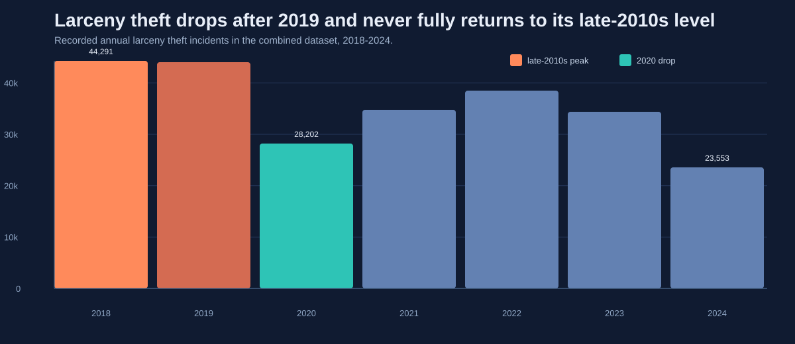

Dataset and framing
The data comes from San Francisco Police Department incident reports that were cleaned and combined during the course. Each row is a recorded incident, not a direct measure of victimization. That matters because changes in reporting, policing, or record-keeping can move the numbers even when underlying behavior changes less.
I use Larceny Theft because it already stood out in my earlier analysis and because it makes the concentration pattern easy to see. For the annual chart, I focus on 2018-2024, where this category is cleanest in the combined dataset. The goal of the page is not to explain every cause, but to show where the pattern is strong and where interpretation has to stay careful.
1. Larceny theft breaks sharply after 2019
The first figure starts with the simplest question: how much larceny theft is being recorded each year? The answer is not a smooth trend. The category stays extremely high in 2018 and 2019, then drops hard in 2020 and never climbs back to that earlier level by 2024. That alone makes the late-2010s period look unusual.
I do not want to overclaim what that break means. A drop in recorded theft does not automatically prove that theft opportunity or offender behavior changed by the same amount. Pandemic-era closures, mobility changes, and reporting effects could all matter. Still, the recorded series clearly splits into a pre-2020 high period and a lower post-2020 one.

2. The category follows a strong daytime and evening cycle
The annual chart shows a break across years, but it hides something just as important: when larceny theft is recorded. The interactive figure below shows that the category is heavily concentrated from late morning into the evening, with particularly strong activity on Friday and Saturday. Midnight and very early morning look relatively quiet by comparison.
This matters because it makes larceny theft look less like background noise and more like an activity linked to daily urban routines: shopping hours, commute hours, nightlife spillover, and places where many potential targets pass through. The exact causes still need outside evidence, but the timing pattern itself is too structured to call random.
3. The map shows that the pattern is spatial as well as temporal
The time pattern is matched by a space pattern. When larceny theft is aggregated into hotspot cells, the heatmap does not light up the whole city evenly. Instead, it concentrates into a relatively small number of cells, especially in the Central, Northern, and Southern districts and a few other high-activity areas.
I read this map as a warning against neighborhood averages. A district can have a lot of recorded theft without that meaning every block is equally exposed. The assignment 1 power-law result already pointed in this direction, and the hotspot map makes the same point visually: a small number of places absorb a large share of incidents.
What the reader should take away
The main point is narrow on purpose. I am not claiming that larceny theft tells the whole story of crime in San Francisco, and I am not claiming that recorded counts map directly onto underlying theft behavior. What I am claiming is simpler and more defensible: in this dataset, larceny theft is highly concentrated. It clusters into a specific recent period, a specific part of the day, and a specific set of hotspot areas.
That is why the category is interesting, but also why it needs caution. If someone wanted to turn this page into a policy argument, the next step would have to be outside evidence about retail activity, mobility, reporting, enforcement, and local context. The figures here reveal structure. They do not, by themselves, prove the cause of that structure.
Sources
- San Francisco Police Department incident reports, combined 2003-present course dataset.
- Basemap tiles from OpenStreetMap contributors.